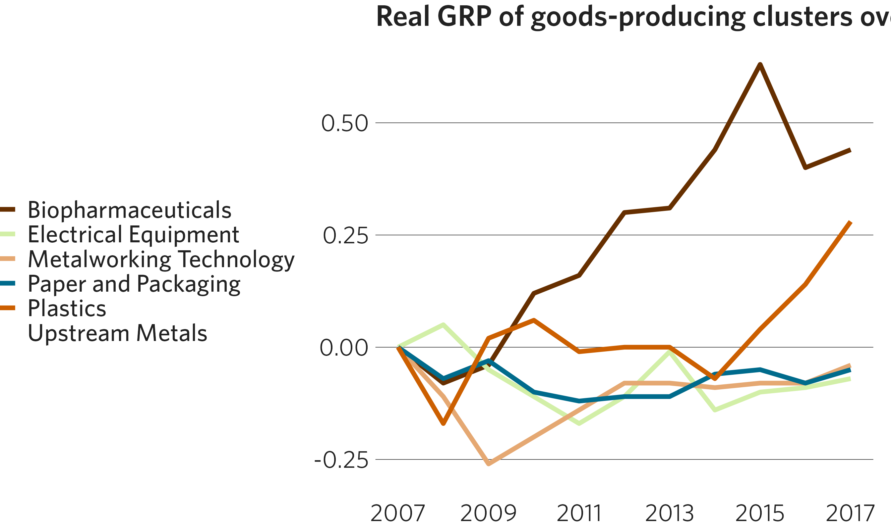

Palettes based on the CMAP color palette can be applied directly to ggplot2 graphics. The package contains both discrete and continuous color palettes. Each type of palette can be applied to either the color or fill attributes of a ggplot.
Continuous palettes
Add continuous palettes by adding either the cmap_fill_continuous() or cmap_color_continuous() function to your plot construction. For example:
df <- dplyr::filter(
percentile_wages,
cluster %in% c("Biopharmaceuticals", "Hospitality and Tourism", "Paper and Packaging")
)
ggplot(data = df) +
geom_point(mapping = aes(x = cluster, y = wage, color = percentile),
size = 5) +
scale_y_continuous(labels = scales::dollar) +
scale_x_discrete(labels = scales::label_wrap(18)) +
coord_flip() +
cmap_color_continuous(palette = "seq_red_purple") +
theme_cmap() +
ggtitle("Wage percentiles for key clusters")
If you’re using a divergent palette, you can specify the midpoint where the divergence begins (default is zero). See ?cmap_gradients for displays of all continuous palettes.
Discrete palettes
Add discrete palettes by adding either the cmap_fill_discrete() or cmap_color_discrete() function to your plot construction. Note that discrete palettes will automatically interpolate additional colors if the dataset has more colors than the palette. This can be helpful but is not ideal for finished graphics. See ?cmap_palettes for displays of all discrete palettes. These include a set of complementary colors (e.g., the "prosperity" palette), but also discrete versions of the gradients defined above (e.g., a binned blue palette implemented by calling "seq_blues").
df <- dplyr::filter(grp_over_time, category == "Goods-Producing")
ggplot(data = df) +
geom_line(mapping = aes(x = year, y = realgrp, color = cluster),
size = 1.25) +
scale_x_continuous(breaks = seq(from = 2007, to = 2017, by = 2)) +
cmap_color_discrete(palette = "community", reverse = TRUE) +
theme_cmap() +
ggtitle("Real GRP of goods-producing clusters over time")
Race/ethnicity palette
If you have a graph with categories based on race and ethnicity, there are functions to apply pre-determined colors for each demographic group: cmap_fill_race() and cmap_color_race(). In the arguments, specify the case-sensitive name of each group as it appears in your data. The function can be used even if your dataset does not contain every race/ethnicity category — simply omit the parameters for the missing categories.
df <- dplyr::filter(
traded_emp_by_race,
Race != "Regional average" & variable == "SpecializedTraded"
)
ggplot(data = df) +
geom_col(mapping = aes(x = Race, y = value, fill = Race)) +
scale_y_continuous(labels = scales::label_percent(accuracy = 1)) +
cmap_fill_race(white = "White",
black = "Black",
hispanic = "Hispanic",
asian = "Asian",
other = "Other") +
theme_cmap(show.legend = FALSE) + # Legend is redundant in this example
ggtitle("Percent employed in specialized traded clusters, by race")
Highlighting categories
If you want to draw attention to a specific group in your graph, use cmap_fill_highlight() or cmap_color_highlight(). This will make your highlighted group one color and all other groups identical in another color. Specify the vector in your data that determines the groups, and then the value of the group to be singled out. Note that this must be the same vector specified in the fill/color aesthetic. The highlight and non-highlight colors have defaults, but can be changed with the color_value and color_other parameters, respectively.
More than one category can be highlighted as well, by feeding a vector of values into the the value argument. See ?cmap_fill_highlight for details.
df <- dplyr::filter(transit_ridership, year == 2019)
ggplot(data = df) +
geom_col(mapping = aes(x = system, y = ridership, fill = system)) +
cmap_fill_highlight(field = transit_ridership$system,
value = "metra") +
theme_cmap(show.legend = FALSE) + # Legend is redundant in this example
ggtitle("Annual passenger trips by service, in millions")